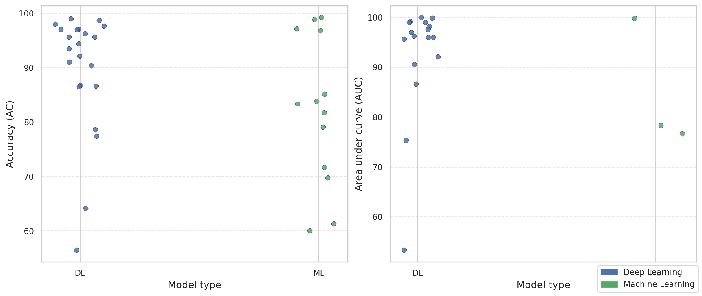
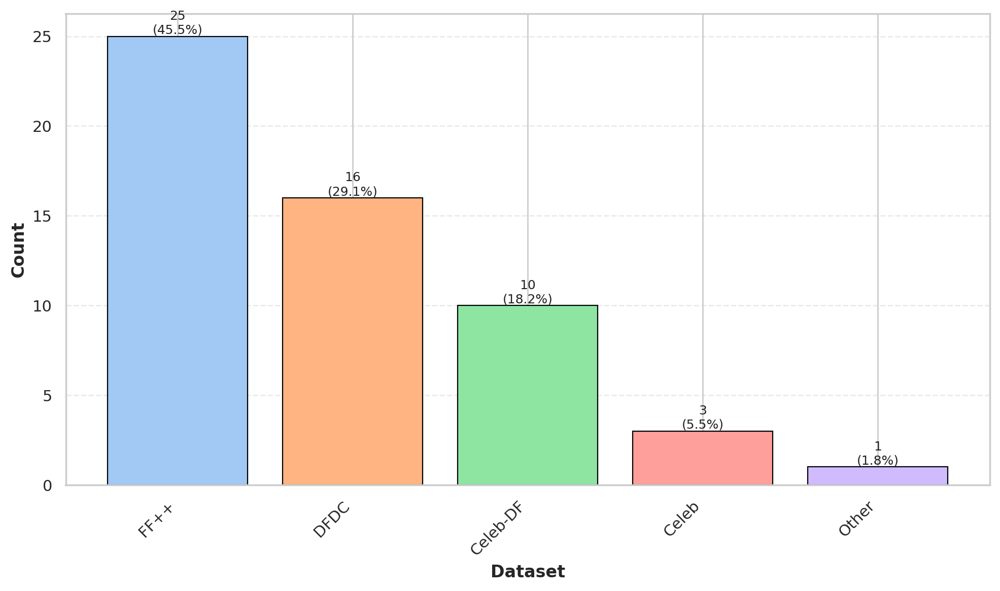
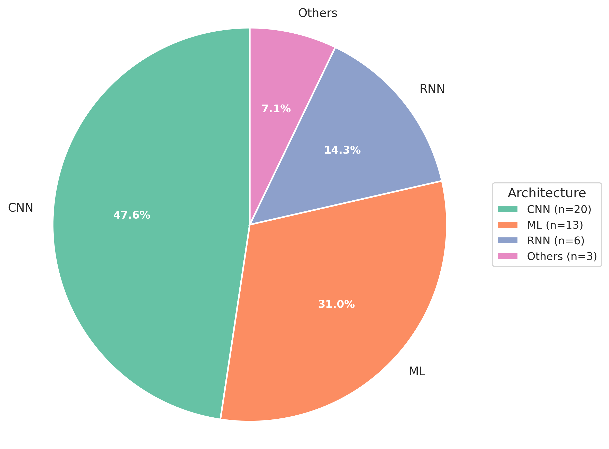

Detecting Deepfakes: A Modern Review
A systematic analysis of machine learning and deep learning models for detecting AI-generated media.
Watch Our Video Read Abstract Download Paper (PDF)Abstract
This webpage accompanies our paper, "Review Paper on Algorithms and Advancements in Detecting Deepfakes." We synthesize recent progress in automated deepfake detection, comparing traditional machine learning with deep learning approaches, discussing dataset biases (e.g., FF++ prevalence) and generalization gaps on challenging benchmarks like DFDC. We provide a visual summary, a poster, and a video overview.
The Problem
Deepfakes have rapidly become one of the biggest challenges in modern digital environments, enabling
the creation of highly realistic fake videos and images. Human ability to detect deepfakes is extremely low,
with accuracy rates barely above chance. This project analyzes the current state of automated detection
models and evaluates how well modern ML and DL techniques perform.



We performed a systematic literature review following PRISMA guidelines. We searched across
Google Scholar, arXiv, Springer, and IEEE, identifying 50 papers published in the last 5 years.
After applying screening and eligibility criteria, 30 high-quality papers were included for final
analysis.
Across multiple academic databases. Evaluation of models, datasets, and metrics. © 2025 Deepfake Detection Review Project • Paper (PDF) These figures summarize dataset usage, architecture distribution, and performance comparisons. Watch our summary video explaining our research, methodology, and findings. Here you can view or download our poster summarizing the project.Methodology
50 Papers Identified
Systematic Synthesis
Key Results
Visual Summary


Project Video
Research Poster